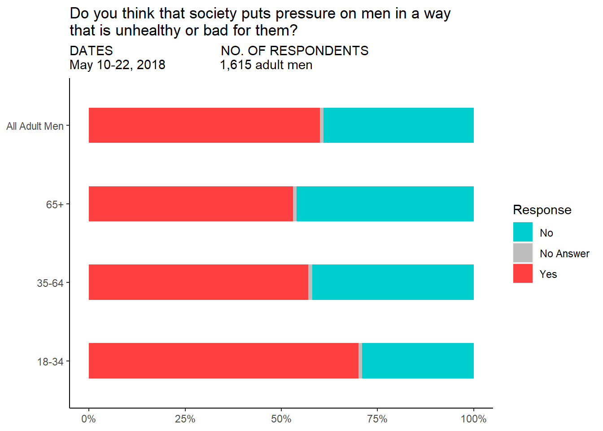

For this exercise, I decided to recreate the graph produced by FiveThirtyEight on What Do Men Think It Means to Be a Man?. The article states that they asked 1,600 men whether #MeToo changed their thinking on masculinity. The specific graph in question which I shall attempt to recreate is the one labeled by the question it represents: “Do you think that society puts pressure on men in a way that is unhealthy or bad for them?”.
This is the original figure:
The rest of this page will showcase the process and the code it took to recreate this graph.
##Code/Detailing
First, we want to load the packages necessary to recreate the graph.
#loading the necessary packageslibrary(dplyr)
Warning: package 'dplyr' was built under R version 4.2.3
Attaching package: 'dplyr'
The following objects are masked from 'package:stats':
filter, lag
The following objects are masked from 'package:base':
intersect, setdiff, setequal, union
library(ggplot2)
Warning: package 'ggplot2' was built under R version 4.2.3
library(here)
here() starts at C:/Users/vjpan/Desktop/MADA/MADA2023/vijaypanthayi-MADA-portfolio
library(ggpubr)
Warning: package 'ggpubr' was built under R version 4.2.3
library(ggthemes)
Next, we want to import the raw data into R.
#import the raw data with here() function so it can be replicated on other devicesraw_masculinity <-read.csv(here("data","masculinity-survey.csv"))#glimpse of the dataglimpse(raw_masculinity)
Now that we have loaded the data and ensured it was imported correctly, we need to create a new data set containing only the data necessary to create this graph. In this case, it will be only the data under the question labeled “Do you think that society puts pressure on men in a way that is unhealthy or bad for them?”. By the way the data was organized, it seemed easier to just make a new data sheet containing only the table of data that was necessary for this exercise.
#import the raw necessary data with here() function so it can be replicated on other devicesraw_necessary <-read.csv(here("data","masculinity-survey-exercise.csv"))#print out the data sheet for the graphraw_necessary
Response Age_Group Percentage
1 Yes All Adult Men 0.60
2 No All Adult Men 0.39
3 No Answer All Adult Men 0.01
4 Yes 18-34 0.70
5 No 18-34 0.29
6 No Answer 18-34 0.01
7 Yes 35-64 0.57
8 No 35-64 0.42
9 No Answer 35-64 0.01
10 Yes 65+ 0.53
11 No 65+ 0.46
12 No Answer 65+ 0.01
We have the data needed from the original data set to recreate the graph from the article. The following steps were taken to try to recreate the original graph.
#create the plot (creating a stacked bar graph)finalplot <-ggplot(data=raw_necessary, aes(x = Age_Group , y = Percentage, fill = Response)) +#make the graph fill from 0-100 (to show percentages)geom_col(position ="fill", width = .45) +#alter the width and color of the barsscale_fill_manual(values=c("Yes"='brown1',"No Answer"='grey',"No"='cyan3')) +#flip the coordinates of the graph so it goes to the side rather than up and downcoord_flip() +#changes the scales from 0-1 to 0%-100%scale_y_continuous(labels = scales::percent) +#Sets up the title and subtitle to be similar, but not accurately, akin to the original graphlabs(title='Do you think that society puts pressure on men in a way \nthat is unhealthy or bad for them?',subtitle='DATES NO. OF RESPONDENTS\nMay 10-22, 2018 1,615 adult men')#prints the final plot, removed the axis titles, removed grid and backgroundfinalplotbase <- finalplot +theme_fivethirtyeight()finalplotbase

#THE FOLLOWING WAS IN PLACE PRIOR TO HELP/REVIEW FROM BETELIHEM#theme(axis.title.x = element_blank(),# axis.title.y = element_blank(),# panel.grid.major = element_blank(), # panel.grid.minor = element_blank(),# panel.background = element_blank(), # axis.line = element_line(colour = "black"))
This does not look EXACTLY like the original, but it is a close copy to it.
Things of note I am not able to make exact:
1.The order of the values for age group bars
2.Label the bars ON the graph (hence the legend)
3.Split up All Adult Men from the individual age groups, but still have all of the bars on the same graph
Further examination of the R code and learning what is capable with R may be necessary to make a direct replica from the one posted by FiveThirtyEight. In addition, something that has been shown to be possible on their website, but I am not fully aware of how to do, is making the graph interactive with the mouse. This will also require further learning and examination of the R language and packages.